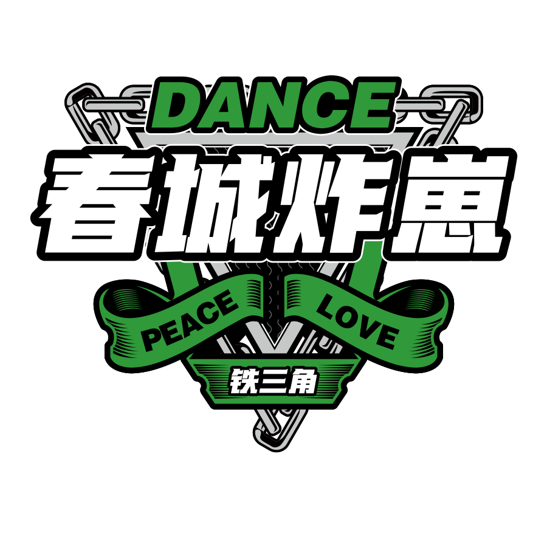

72 DANCE PROFILE
72
DANCER / CHOREOGRAPHER / EDUCATOR
街舞编舞师、导师、铁三角舞蹈品牌创始人。
以身体训练、音乐理解与舞台表达为核心，持续探索街舞教学与编舞创作的更多可能。

165CM50KG37S-XL
ABOUT 72
关于 72 老师
72老师，本名邹倩，铁三角舞蹈品牌创始人，铁三角Crew名誉队长，昆明市街舞运动协会副会长。长期从事街舞教学、编舞创作、舞台作品指导与少儿/成人街舞训练体系建设。
她的教学注重基础能力、身体控制、音乐理解与舞蹈状态的建立，擅长通过清晰的训练逻辑帮助学员找到属于自己的身体表达。
IDENTITY
核心身份
铁三角舞蹈品牌创始人
致力于街舞教学、团队建设与城市街舞文化推广。
铁三角Crew名誉队长
参与团队发展与作品创作，持续推动团队训练与表达。
昆明市街舞运动协会副会长
参与本地街舞文化建设、赛事活动与行业交流。
编舞师 / 街舞导师
专注 Choreography、Hiphop、基本功训练与舞台作品指导。
STYLE
擅长风格
Choreography
强调音乐理解、身体质感、动作连接、情绪表达与作品完整度。
Hiphop
强调律动、基础元素、身体控制、脚步、手臂框架、groove 与音乐性。
GrooveIsolationBody ControlMusicalityFoundationChoreographyStage Performance
EXPERIENCE
赛事及履历
编舞作品经历
江苏卫视《蒙面舞王》李子璇作品编舞师
CCTV3《街舞英雄》作品编舞师
赛事成绩
2016 AUDC 云南赛区齐舞冠军
2017 HHI 世界街舞大赛云南赛区齐舞冠军
2020 DND 街舞超级联赛云南赛区齐舞冠军
2021 重庆舞动山城街舞挑战赛最具风格奖
行业身份
铁三角Crew名誉队长
铁三角舞蹈品牌创始人
昆明市街舞运动协会副会长
TEACHING PHILOSOPHY
教学理念
舞蹈不是只记动作，而是让身体真正理解音乐。基础训练不是重复消耗，而是让身体建立记忆、力量和表达。72老师的课堂注重身体控制、律动开发、动作质感、音乐处理与舞蹈状态，引导学员从“会跳动作”走向“真正会跳舞”。
基本功训练身体控制音乐理解动作质感舞蹈状态表达能力
TEACHING VIDEOS
基础训练、身体控制与教学观点展示
这里展示 72 老师在抖音发布的教学基本功、训练方法与舞蹈观点内容。点击按钮跳转抖音观看。


GALLERY
照片展示


STUDIO & CREW
工作室与团队
铁三角舞蹈是由 72 老师创立的街舞品牌，围绕街舞教学、舞台作品、团队训练、赛事活动与青少儿街舞培养持续发展。


CONTACT
联系方式
想了解课程、集训、合作、编舞或工作室信息，可以通过以下方式联系。